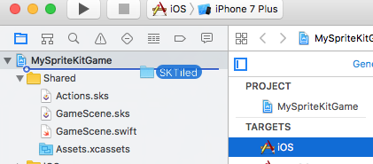

View on GitHub
View on GitHub SKTiled Reference
SKTiled Reference
SKTiled is a simple library for using Tiled files with Apple’s SpriteKit, allowing the creation of game assets from .tmx files. Inspired by TilemapKit and written purely in Swift 2.0, I began working on this for a project after the development of TilemapKit was halted. While initially created as an exercise in learning Apple’s new programming language, I’ve decided to open-source it in case others find it helpful.
For Swift 3/iOS10/OSX 10.11. See this branch for Swift 2.2+ version.


Installation
Simply drag the SKTiled directory into your Xcode project, and add the files to your game target:

Alternately, you can include this directory in your project’s workspace.
Usage
Loading a tilemap is simple:
if let tilemap = SKTilemap.load(fromFile: "sample-map") {
scene.addChild(tilemap)
}
The included SKTiledScene object conforms to the SKTiledSceneDelegate protocol and can be used as a template. The tilemap is accessed via the SKTiledScene.tilemap property, and should be added as a child of the SKTiledScene.worldNode object.
Working with Tilemaps
Acessing Layers
Layers can be accessed by type:
let tileLayers = tilemap.tileLayers
let objectGroups = tilemap.objectGroups
let imageLayers = tilemap.imageLayers
or by name:
let groundLayer = tilemap.getLayer(named: "Ground") as! SKTileLayer
let objectsGroup = tilemap.getLayer(named: "Objects") as! SKObjectGroup
let hudLayer = tilemap.getLayer(named: "HUD") as! SKImageLayer
if let groundLayer = tilemap.tileLayer(named: "Ground") {
groundLayer.showGrid = true
}
Properties like map size & tile size can be accessed via the SKTilemap.size and SKTilemap.tileSize properties.
Accessing Tiles
let tileCoord = TileCoord(7, 12)
let tile = groundLayer.tileAt(coord: tileCoord)
let tile = groundLayer.tileAt(7, 12)
There are many ways to work with tile objects; globally from the SKTilemap node:
// query tiles of a certain type
if let fireTiles = tilemap.getTiles(ofType: "fire") {
// do something fiery here...
}
// query tiles from all layers
let tiles = tilemap.tilesAt(2, 4)
… or from individual layers:
if let waterTiles = waterLayer.getTiles(withID: 17) {
// do something watery here
}
Accessing Objects
SKTileObject objects can be returned from both the SKTilemap and SKObjectGroup nodes:
let allObjects = tilemap.getObjects()
let allTreeObjects = tilemap.getObjects(named: "Tree")
let allCollisionObjects = tilemap.getObjects(ofType: "Collision")
// get objects from the objects group layer
let entrances = objectsLayer.getObjects(ofType: "Entrance")
Acessing Tile Data
Tile data is accessible from either the SKTileSet object:
let tileSet = tilemap.getTileset("spritesheet-16x16")
// get data for a specific id
let tileData = tileSet.getTileData(gid: 177)
as well as the parent SKTilemap:
let tileData = tilemap.getTileData(gid: 177)
Adding Nodes
Tile data includes texture data, and SKTile objects are SKSpriteNode subclasses that can be initialized with tileset data:
let newTile = SKTile(data: tileData)
scene.addChild(newTile)
Coordinate information is accessible within each layer via the TiledLayerObject.pointForCoordinate method:
let tilePoint = groundLayer.pointForCoordinate(4, 5)
tile.position = tilePoint
New nodes (any SKNode type) can be added directly to any layer:
let newNode = SKNode()
groundLayer.addNode(newNode, 4, 5, zPosition: 100.0)
Animated Tiles
Animated tiles will animate automatically; animated tiles can be accesssed from the tilemap. The SKTile.pauseAnimation property can stop/start animations:
let animatedTiles = tilemap.getAnimatedTiles()
for tile in animatedTiles {
// pause the current animation
tile.pauseAnimation = true
}
Custom Properties
Custom properties are supported on all object types, and can be accessed easily:
let value = groundLayer.getValue(forProperty: "type")
groundLayer.setValue("water", forProperty: "type")
To query tiles of a given type:
let waterTiles = groundLayer.getTiles(ofType: "water")
let allWaterTiles = tilemap.getTiles(ofType: "water")
For specific property/value types, query the parent layer:
let walkableTiles = groundLayer.getTilesWithProperty("walkable", "1")
or the tilemap:
let walkableTiles = tilemap.getTilesWithProperty("walkable", "1")
Features
- iOS & macOS versions
- renders all Tiled layer types (tile, object, image)
- custom properties for maps, layers, objects & tiles
- parses inline & external tilesets
- render tile layers as a single sprite
- render animated tiles
- render flipped tiles
Limitations
- cannot parse data compressed with gzip/zlib compression.
Upcoming Features
- multi-threaded rendering
- generate GKGridGraph graphs based on custom tile attributes (iOS10)
- user-definable cost properties for GKGridGraph nodes (iOS10)
Acknowledgements
- Steffen Itterheim creator of TilemapKit, the inspiration for this project
- Kenney Vleugels for use of his spritesheet assets.
- Amit Patel for his excellent tutorials on tile-based game logic
- Clint Bellanger: Isometric Tiles Math